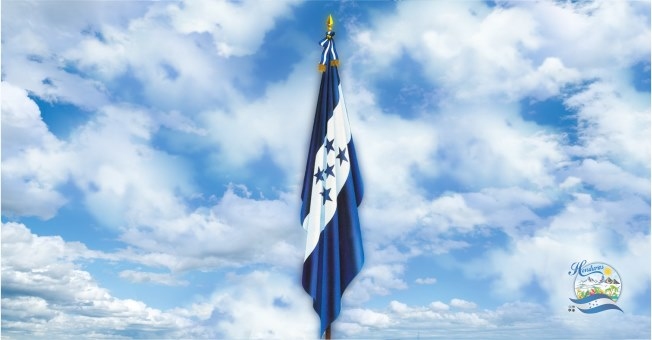

Simbolos patrios
Bandera Nacional
Se podría decir que de todos los símbolos patrios mayores este símbolo en particular es el más representativo para cada hondureño y
el mayor recuerdo de la patria, el cual quedo establecido por el Decreto Legislativo No. 7 del Congreso Nacional el 16 de febrero de
1866 siendo Presidente de la República don José María Medina,
en 1949 fueron precisados el tono del azul y las proporciones de las tres franjas.
Está basada en la bandera de las antiguas Provincias Unidas del Centro de América,
la cual a su vez estaba basada en la bandera de las Provincias Unidas del Río de la Plata, actual Argentina.

Escudo Nacional
Está basada en la bandera de las antiguas Provincias Unidas del Centro de América,
la cual a su vez estaba basada en la bandera de las Provincias Unidas del Río de la Plata, actual Argentina.
En el año de 1866 se le agrego un sol naciente y la siguiente leyenda: República de honduras libre soberana e independiente,
15 de setiembre de 1821, finalmente en 1935 bajo la presidencia de Tiburcio carias andino le fue dado su aspecto definitivo,
agregándole las flechas, un terreno bañado por los dos mares siendo el caribe y el pacifico,
tres arboles de roble, otros tanto de pino, las minas, la barra, el barreno, la cuña y el martillo.

Ave Nacional
La guara roja o como es su nombre científico Ara Macao, fue declarada Ave Nacional de honduras el 28 de Junio de 1993 bajo Decreto Legislativo No. 36,
pertenece a la gran familia de los loros del orden de Psitasiformes y la familia de los Psitáridos,
se le conoce también bajo el nombre de guacamayo o guacamaya.

Historia
Civilizaciones prehispánicas
Las primeras evidencias del ser humano se encuentran cerca de la ciudad de La Esperanza, Intibucá, donde varios asentamientos humanos se desarrollaron sobre la tradición cultural precolombina de Mesoamérica hace unos 12 mil años.
Una buena parte de esa historia del hombre primitivo ha sido concentrada desde hace mas de tres mil años a la presencia de los Mayas alrededor de la ciudad de Copán al occidente de Honduras, ubicada en el departamento de Copán, la civilización más avanzada descubierta hasta el momento en el territorio nacional. La ciudad maya de Copán prosperó durante el Período Clásico (150-900), desarrollaron ampliamente muchas disciplinas como la escultura, pintura, astronomía, matemáticas, música y literatura.
Llegada de los españoles
El 30 de julio de 1502, Cristóbal Colón arribó a las costas de Honduras en su cuarto y último viaje por el continente americano. Dos décadas más tarde, comenzaría la conquista del territorio hondureño por orden de Hernán Cortés.
Para cuando se dio el arribo de los españoles, la ciudad maya de Copán ya estaba deshabitada, los conquistadores encontraron a las demás sociedades prehispánicas los Lencas, los Tolupanes, los Pech, los Tawahkas, los Chortis y los Sumos dominando la región de Honduras.
La conquista de Honduras tradicionalmente se considera culminó a finales del año de 1537 con la derrota de los Lencas particularmente con la muerte de Lempira a manos de los españoles.
Tras la conquista la población nativa en Mesoamérica se redujo en un 80% debido a las enfermedades europeas, las guerras y la desaparición de la estructura social existente.
Independencia
En 1821, vísperas de la independencia, las cortes españolas erigieron la provincia de Honduras,
que en agosto de ese año instaló su propia Diputación Provincial, con sede en Comayagua.
La noticia de que Guatemala había proclamado la separación de España el 15 de septiembre de 1821,
la Diputación Provincial de Comayagua proclamó la independencia de Honduras de la monarquía española el 28 de septiembre de 1821.
El 5 de enero de 1822, Honduras pasó a formar parte del imperio mexicano de Agustín de Iturbide,
esta anexión finalizó el 1 de julio de 1823 con la formación de la República Federal de Centroamérica,
durando la anexión a México un año con seis meses.
Extensión Territorial
El territorio de Honduras tiene una extensión de 112.492 km² de superficie, y está ubicado en el centro de la región centroamericana.
Limita al norte con el Mar Caribe o Mar de las Antillas, al sur con el Golfo de Fonseca (Océano Pacífico) y la República de El Salvador.
Al este, limita con Nicaragua y el Mar Caribe; y al oeste con Guatemala y El Salvador.
Las fronteras marítimas aun están en proceso de definición y/o demarcación.